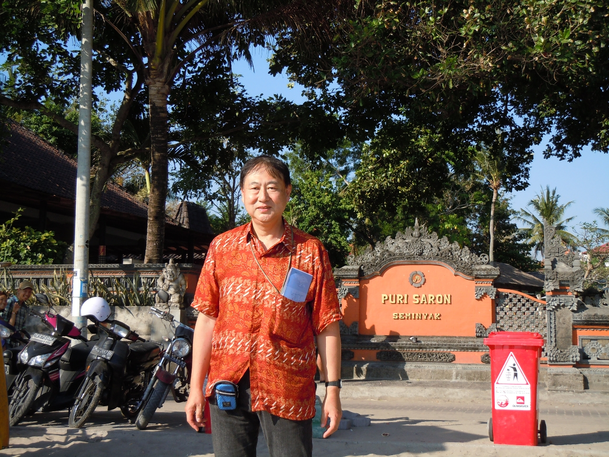

Tentang Guru-Guru
- 
Pak Nomura
Prof. Nomura Tooru adalah penanggung jawab Program Bahasa Indonesia di Universitas Keio SFC sejak 1990. Keahlian beliau adalah sejarah, khususnya sejarah Asia Tenggara.

Pak Ari
Beliau mendapatkan master degree dari Universitas Kwansei Gakuin pada tahun 2009. Semenjak itu Beliau mengajar di Saty Wacana Christian University(SWCU).

Pak Bambang
Bambang Rudyanto telah mengajar di Keio SFC sejak April 2004. Latar pendidikan beliau adalah Remote Sensing and Geographic Information System@(GIS).

Pak Ogasawara
Latar belakang pendidikan beliau adalah sosiologi, dan keahlian beliau adalah masyarakat dominan Indonesia (Jawa).

Ibu Nonaka
Beliau memiliki ketertarikan pada Negara Indonesia yang sangat besar. Pada zaman SMA beliau sempat mengikuti pertukaran murid di Indonesia.